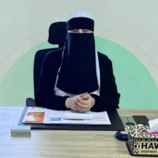

استشارة أمراض الحساسية
تقييم وعلاج حالات الحساسية والأمراض التنفسية الموسمية.
أكثر من ٢٠ عامًا من الخبرة في تشخيص وعلاج أمراض الصدر والدرن (السل)، بما في ذلك وحدات العناية المركزة — في عيادة هادئة تهتم بكل مريض.


حاصلة على ماجستير أمراض الصدر والدرن (السل) من جامعة القاهرة والزمالة المصرية لأمراض الصدر، وعملت في وحدات العناية المركزة وعدد من أكبر مستشفيات الصدر.
تقييم وعلاج حالات الحساسية والأمراض التنفسية الموسمية.
تشخيص ومتابعة حالات الدرن (السل) للرئة.
متابعة الحالات المزمنة مثل الربو والتهاب الشعب الهوائية المزمن.
تقييم حالات انقطاع النفس الانسدادي والنوم لدى البالغين والسمنة.
رعاية طبية للأطفال بدءًا من عمر 6 أشهر.
خطط علاجية فردية للسيطرة على الربو والوقاية من النوبات.
خدمات متميزة تلبي احتياجات المرضى مع الحفاظ على راحتهم وخصوصيتهم.

تواصل معنامواعيد صباحية ومسائية طوال الأسبوع وفي عطلة نهاية الأسبوع.
تقبل العيادة تعاقدات العديد من شركات التأمين والنقابات.
زيارات منزلية لكبار السن وذوي الاحتياجات الخاصة.
جلسات أونلاين لتوفير الرعاية من أي مكان.
نتائج سريعة ودقيقة دون الحاجة للذهاب إلى معامل خارجية.
مصعد وتكييف ووسائل دفع إلكتروني (إنستاباي وفودافون كاش).
استشر الدكتورة لأمراض الصدر والحساسية والدرن (السل).
حدد موعدًا بسهولة — بالعيادة أو زيارة منزلية أو عن بُعد.
استلم المتابعات وأكمل الدفع نقدًا أو إلكترونيًا.
إجابات مختصرة على أكثر الأسئلة التي تصلنا من المرضى.